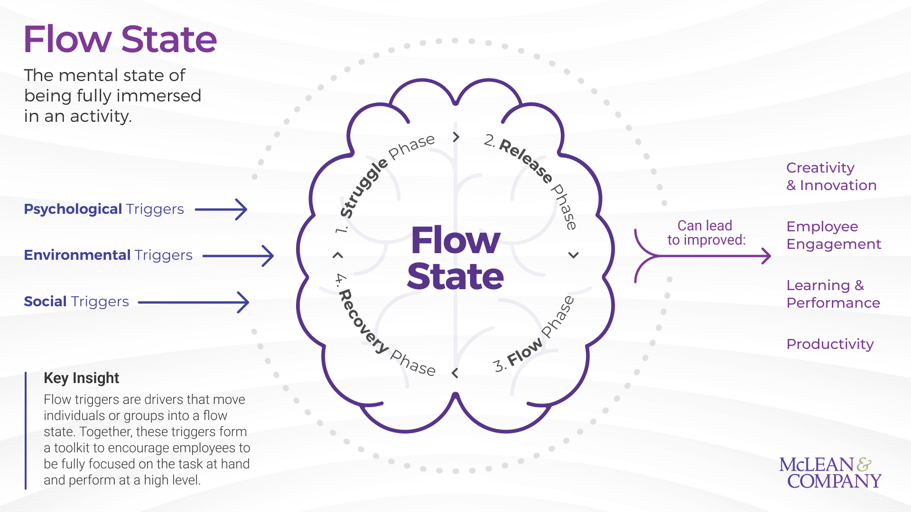
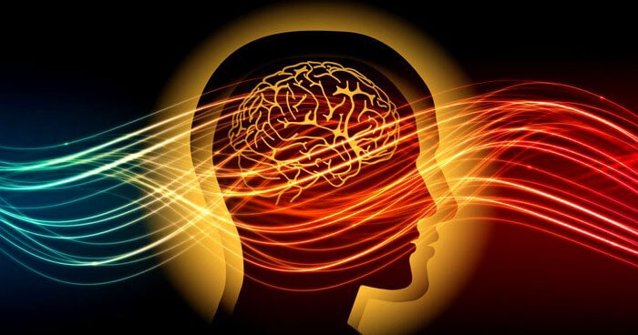
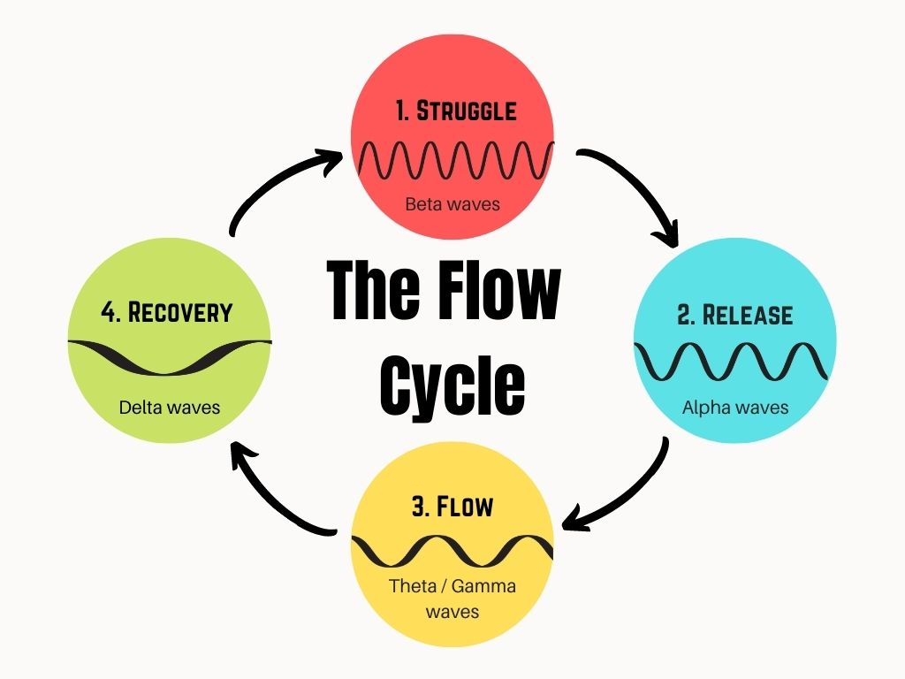
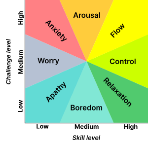

I wanted to note several realizations about video games and interface control. I previously said that the direct manipulation interface seeks to obtain what is unobtainable by manipulating what has been obtained. I specifically meant "the direct connection with the user". After all, there must be a proxy. How does the interface cross the boundary posed by the proxy. However, the interface itself is a proxy and seeks to be in the dream state with the user.
I realized watching this video that perhaps the proxy with such a strong will is the hand itself. The hand is the human interface with the brain.

I have experienced the ecstasy of playing a composition on the piano. I have also felt this euphoric disconnection from reality when typing. I have also felt this in a different way when playing video games. But not as strong. Not as universal to my senses. I realized there are different flow states. The ones most understood are those found while creating. Building with the hands and the mind in a way that we supersede the speed of conscious electrical processing. Overclocked if you will.

The other flow state that I notice is a perspective or synthetic flow state. It seems to be when an experience in which the flow state was formed is communicated to an end user, such as listening to music, playing video games, or reading a book. They receive, what I will refer to as a " lesser flow state" upon levels of understanding the designer's state of intentions. This can feel very alien and unsure as if coming into existence and observation rather than simply not existing and yet observing.
Perhaps this is where the mind leaves its leftover errant thoughts from such an extraneous pursuit as design or physical composition. Perhaps the “errant thoughts” were made as the designer moved through the critical skill/challenges in the process of design and creation with their hands.
Can one organize errant thoughts?

From Apathy through worry, anxiety and arousal, relaxation, and control. Perhaps that explains the dialectic reasoning of our deviance in technology. The violence, the sex, the ease with which we are drawn into others' philosophies to the degree of strongly influencing or manipulating our own personal experiences and philosophies.
I thought of two other flow state possibilities during this writing.
The Mechanical flow state, such as driving a car, living in a well-designed home, assembling something that has been pre-modeled.
The Goodness flow state, such as eating a well-prepared dish, holding a baby, being the subject of an act of kindness.
The mechanical flow state seems to be relative to "control, anxiety, and arousal" because of the state and the level of choice we have on how deep we immerse ourselves in something like driving a car, or moving about a well-curated home, or following the steps to craft and assemble a piece of furniture.
So much so that governance, laws, and strict consequences must be made to keep others safe in the mechanical manifestation of flow state that driving and building represents. Things like pre-modeling have deep-rooted design standards that have been developed and passed down over generations. There are some games which induce this sensation as well, like fighting games and first-person shooters. Perhaps this is the space that VR and AR are trying to fill? The difference between the manifestation of mechanical (machine state) flow state and the manifestation of digital (dream state) flow state is the human interface for the components of the physical world. They too must achieve experiences at the hands of the human being and our controlling experience.
I am truly coming to understand the importance of accessibility when it comes to furthering human use and understanding of technology. I have thought of many products that could benefit people who may not be considered special needs or plagued by known disabilities. Also, the summit of users that have accessibility needs that can see, can hear, do have mobility, are young is still high and ever increasing.
As we become more individualized about our experience with technology it is inevitable that we also begin to identify with unique quirks and misconceptions about technology that make certain perspectives of such a broad and inclusive experience out of reach. Equitable conveyance of digital transactions. Every time a bit travels the internet money is made. Users are being used to sustain technology development and dissemination. These end users have no agreements or terms that define their experience as their own or protected outside of the interests of the commercial industry. This is an accessibility issue like when women and people of color could not vote. The end user has no accessibility to preserve his or her experience as he or she experienced it. Yet the company has means of preserving the experience the way they want to log it and manipulate it on their servers.
The range of accessibility benefits is only increasing. I have thought of many products that could benefit people who may not be considered special needs or plagued by known disabilities. Also, the summit of users that have accessibility needs that can see, can hear, do have mobility, are young is still high and ever increasing. As we become more individualized about our experience with technology it is inevitable that we also begin to identify with unique quirks and misconceptions about technology that make certain perspectives of such a broad and inclusive experience out of reach, or inconclusive as data, or not as immersive or influential with some users. In these areas, accessibility can bridge the gap between the existing user experience as a technology design philosophy and the future of user experience as a result of the development of technical design philosophy. For example; we have ignored eye fatigue and carpal tunnel or arthritis as a result of the user experience. Accessibility options that cater to these otherwise healthy users stem from studies and developments to serve users who cannot see or cannot move their limbs at all.
What about the onset of psychological accessibility needs? Users who have been traumatized by experiences involving computers and can't bring themselves to trust the science to hold their human safety and security first?